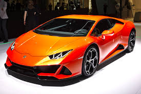
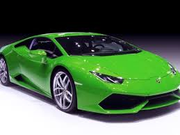
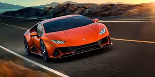

ESTO DIRIJE A AUTOS LAMBONGHINI |
||
|  |  |  |
| El Lamborghini Huracán es un automóvil deportivo de alto rendimiento producido por la casa italiana Lamborghini, es el sucesor del Lamborghini Gallardo. La empresa matriz es el Grupo Volkswagen. La primera versión que se presenta es el Lamborghini Huracán LP 610-4, presenta un motor V10 de 5.2 L con 610 CV colocado en posición central posterior con un sistema de tracción integral. Su par máximo de 560 Nm a 6.500 vueltas, mientras que la relación peso potencia es de 2,33 kg por caballo de fuerza. Posee una caja de doble embrague con siete velocidades. | El Lamborghini Aventador LP700-4 es un automóvil superdeportivo biplaza coupé del fabricante italiano Lamborghini. Fue concebido para reemplazar al Murciélago, como el nuevo modelo tope de gama. Fue presentado en el Salón del Automóvil de Ginebra el 28 de febrero de 2011, cinco meses después de su presentación oficial en Sant'Agata Bolognese. Su código interno de desarrollo es LB834. Poco tiempo después de la presentación al público del Aventador, Lamborghini anunció que había vendido más de 12 meses de su producción. Las entregas comenzaron en el segundo semestre de 2011. | El Lamborghini Murciélago es un automóvil superdeportivo diseñado y producido por el fabricante italiano Lamborghini en su fábrica de Sant’Agata Bolognese. El Murciélago es un dos plazas disponible con carrocerías cupé y descapotable de dos puertas; las puertas de este deportivo son del tipo de tijera (también conocidas como Lamborghini Style Doors o Puertas Estilo Lamborghini). |
FINAL |
||